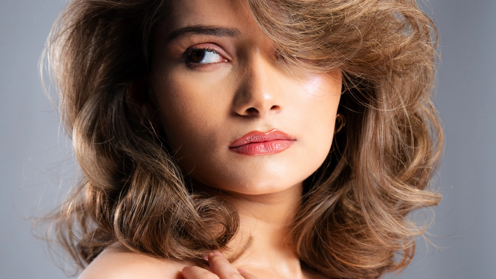

Choosing the right makeup technique is important when preparing for weddings, parties, receptions, and other special occasions. HD makeup and airbrush makeup are two popular options for achieving a polished appearance, but they differ in application methods, coverage, texture, and overall finish.
HD makeup focuses on creating a smooth, natural-looking finish that photographs well, while airbrush makeup uses a specialised spray application to create a fine, lightweight layer of foundation. The better option depends on your skin type, desired coverage, event duration, and personal makeup preferences.
High-definition (HD) makeup is designed to create a refined complexion that looks smooth under different lighting conditions, including professional photography and video recording.
It uses finely milled makeup products that help create an even-looking finish without appearing excessively heavy. HD makeup is generally applied using traditional tools such as brushes, sponges, and blending techniques.
Key characteristics of HD makeup include:
Airbrush makeup is a professional makeup technique in which foundation and other suitable products are applied using a specialised airbrush machine. The device sprays a fine mist of makeup onto the skin through a small nozzle.
This method allows makeup artists to create a thin, evenly distributed layer of foundation while gradually building coverage where required.
Key characteristics of airbrush makeup include:
Although both techniques can create a professional makeup finish, their application methods and results are different.
| Feature | HD Makeup | Airbrush Makeup |
|---|---|---|
| Application | Brushes and sponges | Airbrush spray machine |
| Texture | Smooth and refined | Fine and lightweight |
| Coverage | Buildable and customisable | Buildable with suitable products |
| Finish | Natural to glamorous | Soft and evenly distributed |
| Blending | Manual blending | Spray-based application |
| Touch-ups | Depends on products and skin type | Depends on products and skin type |
| Customisation | Highly flexible | Requires suitable airbrush products and technique |
Neither technique guarantees a better result for everyone. Product quality, skin preparation, makeup artist expertise, and individual skin characteristics all influence the final appearance.
The right technique depends on the type of event, your desired appearance, and the conditions in which you will be wearing the makeup.
Choose HD Makeup If You Prefer a Natural Finish
HD makeup may be suitable if you:
Airbrush makeup may suit you if you:
The final result depends on selecting the right formula and applying it appropriately for your skin.
Your skin type should be considered before selecting a makeup technique.
Oily Skin
People with oily skin may benefit from suitable oil-control products and a well-prepared makeup base. Both HD and airbrush makeup can work, provided the products are selected according to skin requirements.
Dry Skin
Dry skin generally benefits from adequate moisturisation before makeup application. A hydrating base can help prevent makeup from emphasising dry patches or uneven texture.
Combination Skin
Combination skin may require different product choices across the face. A makeup artist can use suitable preparation and targeted application to balance oily and dry areas.
Sensitive Skin
People with sensitive skin should discuss product ingredients and previous reactions with their makeup artist before application. A patch test may be appropriate when trying unfamiliar products.
Regardless of whether you choose HD or airbrush makeup, preparation and application techniques play an important role in the final result.
Follow these tips:
Choosing between HD makeup and airbrush makeup is only one part of preparing for a special occasion. The makeup artist's experience, product selection, skin preparation, and understanding of your preferred look are equally important.
At Frenyz Salon in Vadodara, clients can explore professional beauty and makeup services suited to different occasions and personal preferences.
Whether you are preparing for a wedding, engagement, reception, or celebration, discuss your outfit, event schedule, skin type, and preferred makeup finish during your consultation.
A professional makeup consultation can help determine which application technique and products are suitable for achieving your desired appearance.
HD makeup and airbrush makeup both offer ways to achieve a polished appearance for weddings and special events. HD makeup provides flexibility in coverage and traditional blending, while airbrush makeup creates a fine, spray-applied foundation finish.
The best choice depends on your skin type, desired coverage, event requirements, and comfort with the application method. Consulting a professional makeup artist can help you select a technique that complements your features and suits your occasion.
Neither technique is universally better for bridal functions. Airbrush makeup may suit brides who prefer a fine, lightweight foundation application, while HD makeup offers flexibility in coverage and blending. The right choice depends on skin type, desired finish, outfit, and event conditions.
Yes, professionally applied HD makeup can create a smooth, refined appearance in photographs and videos. The final result depends on appropriate product selection, coverage, blending, and lighting conditions.
Yes, airbrush makeup can be used on dry skin when the skin is properly prepared and suitable products are selected. Adequate moisturisation before application helps create a more even finish and reduces the appearance of dry patches.